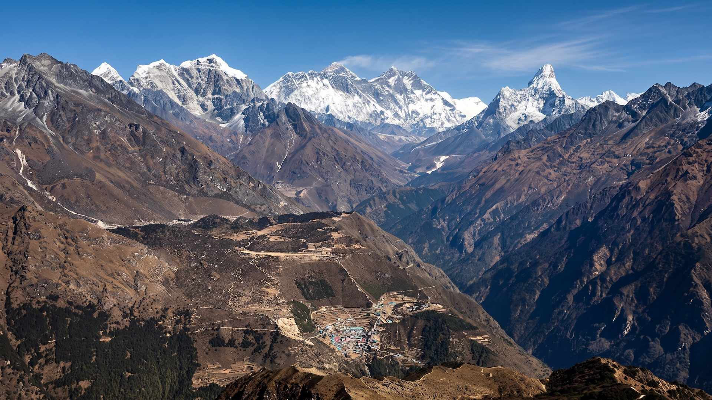
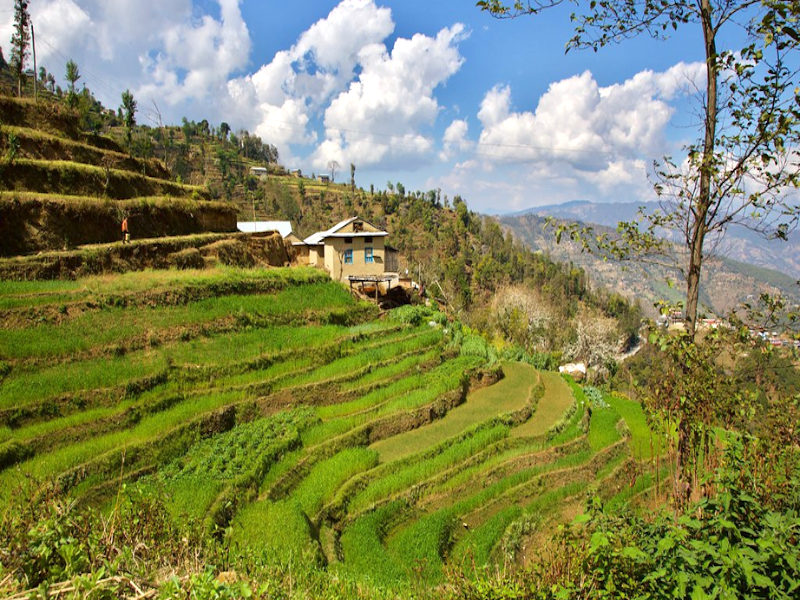
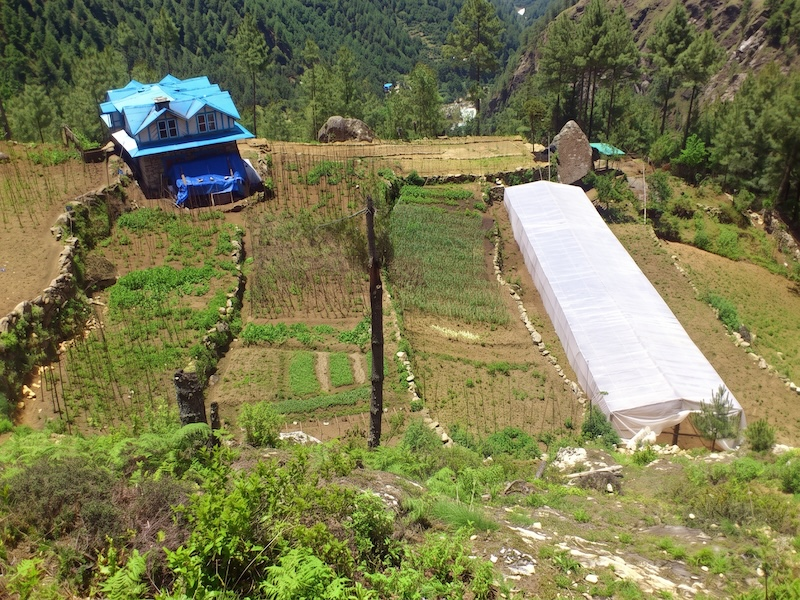
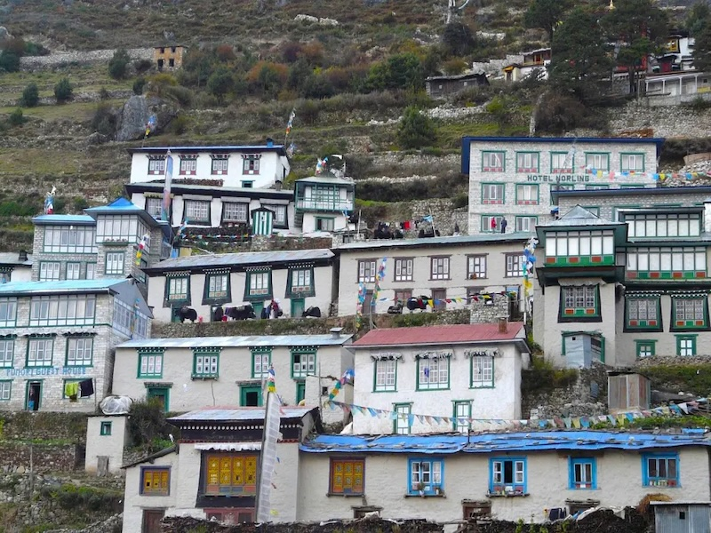
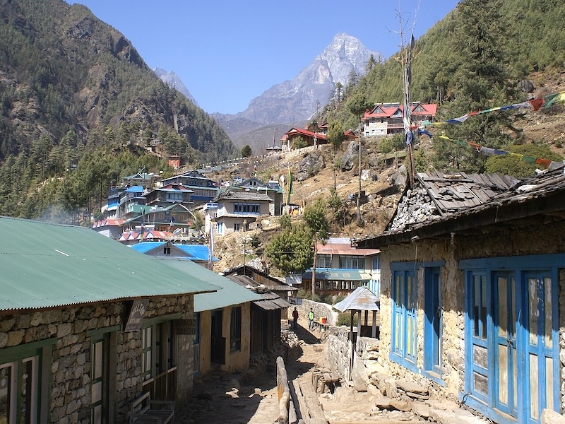

Khumbu Agro Tourism
The Himalayas Beyond the Trail
Along the trail between Lukla and Namche Bazaar lies Monjo — offering a quieter, deeper way to experience the Everest region through its terraced farms, seasonal food, culture, and community life.
"Here, agriculture is not something to merely observe. It is something to take part in — a way to connect with the land and experience the rhythm of Himalayan life."




Authentic Agro-Tourism & Nature-Based Wellness
Khumbu Agro Tourism blends traditional farming practices with nature-based wellness, inviting travelers to explore the Himalayas beyond trekking and sightseeing. Walk through working farms, learn high-altitude permaculture, harvest seasonal produce, enjoy fresh farm-to-table meals, and experience the quiet rhythms of Monjo.
The Five Pillars of the Khumbu Experience
Activities & Himalayan Stays
A Quiet, Deeper Way to Experience the Everest Region
Whether you are an individual traveler seeking an authentic farm stay, a trekking agency looking for distinctive cultural offerings, or an organization interested in sustainable mountain agriculture — we welcome you to Monjo.